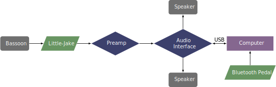

This piece was commissioned by Martin Van Klompenberg in 2018 and can be obtained by contacting the composer at his website.
The performance notes included with the score recommend using an electric bocal instead of a microphone, but the piece would still work with a microphone. The patch advances by using a footswitch pedal that is mapped to the space bar, likely a Bluetooth page-turning pedal. The rest of the setup is typical to that of any piece with a computer; the sound passes through the microphone to an audio interface, then to the computer and back to the interface before heading out to speakers.
A setup for this piece is shown below. 
The patch for this does not currently open in presentation mode, so the first thing the performer needs to do after opening the patch is to click the button that is third from the left on the bottom toolbar. Then the patch should look like the screenshot below. From here, the performer should press the microphone button to turn on the audio system. The input level is set with the slider to the right of the microphone button. Then the performer begins the piece and presses the footswitch to advance the piece. The footswitch also sets the tempo for a later section by triggering three cues in tempo.
This piece has some technical challenges, mainly lots of grace note runs and tremolos. However, the piece is generally very free and does not require a lot of syncing with prerecorded material, so the performer can take some liberties with tempo and the speed of fast notes. The electronics part is not too difficult either; a new cue is triggered every couple of phrases. Overall, this piece should be doable by an advanced undergraduate student.
This piece does not have a true tonal center but also does not feel like a true atonal piece. The frequent tremolos tend to avoid chromatic, dissonant intervals. This piece is bordering on the avant-garde but probably would be accessible to most audiences.
©2024 by Benjamin Bradshaw
Logo ©2024 by Hannah Bradshaw